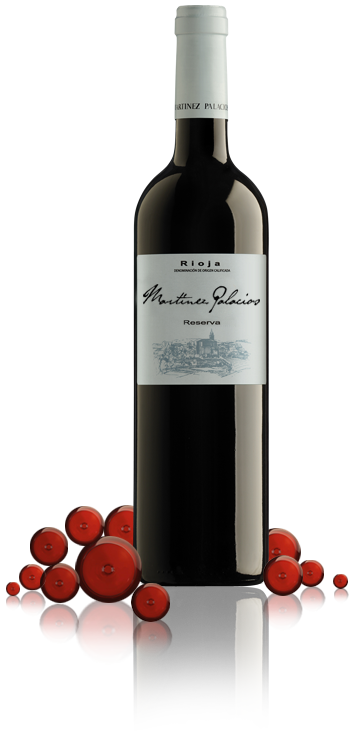

<!DOCTYPE html>
<html lang="es">
<head>
    <meta charset="UTF-8">
    <meta http-equiv="X-UA-Compatible" content="IE=edge">
    <meta name="viewport" content="width=device-width, initial-scale=1.0">
    <title>Nuestros Vinos</title>

    
    
                <!-- Fonts -->
    <link href="https://fonts.googleapis.com/css2?family=Gentium+Plus&family=Indie+Flower&family=Oregano:ital@1&display=swap" rel="stylesheet">
    <link href="https://fonts.googleapis.com/css2?family=Emilys+Candy&family=Gentium+Plus&family=Indie+Flower&family=Oregano:ital@1&display=swap" rel="stylesheet">
                <!-- Link css -->
    <link rel="stylesheet" href="../estilos/bootstrap.min.css">
    <link rel="stylesheet" href="../estilos/estilos.css">
</head>
</html>


<body>
    
    
    <div class="text-start"></div>
            <h1 class="titulo">Elexir</h1>
            <h2 class="subtitulo">Wines & Deli</h2>
    
            
        
<header class="header">
    <nav class="text-center">
    <ul>
    <li><a class="btn btn-secondary" href="../index.html"a>Home</a></li>
    <li><a class="btn btn-secondary" href="vinos.html"a>Vinos</a></li>
    <li><a class="btn btn-secondary" href="espumantes.html"a>Espumantes</a></li>
    <li><a class="btn btn-secondary" href="delicattessen.html">Delicattessen</a></li>
    <li><a class="btn btn-secondary" href="contacto.html"a>Contacto</a></li> 
                
    </ul>
    </nav>
    </header>
    
    

    <div class="alert alert-danger d-flex align-items-center" role="alert">
        <svg xmlns="http://www.w3.org/2000/svg" width="24" height="24" fill="currentColor" class="bi bi-exclamation-triangle-fill flex-shrink-0 me-2" viewBox="0 0 16 16" role="img" aria-label="Warning:">
          <path d="M8.982 1.566a1.13 1.13 0 0 0-1.96 0L.165 13.233c-.457.778.091 1.767.98 1.767h13.713c.889 0 1.438-.99.98-1.767L8.982 1.566zM8 5c.535 0 .954.462.9.995l-.35 3.507a.552.552 0 0 1-1.1 0L7.1 5.995A.905.905 0 0 1 8 5zm.002 6a1 1 0 1 1 0 2 1 1 0 0 1 0-2z"/>
        </svg>
        <div class="text-center text-danger" >
          El que vino al mundo y no tomo vino.. A que vino?
        </div>
      </div>
         
     <h2 class="parrafoimp">Vinos Malbec</h2>
     <div class="img_vino"></div>

    
        
    <h2 class="parrafoUno text-white">El malbec es una variedad de uva morada usada para la elaboración de vino tinto. Las uvas tienden a tener un color oscuro y abundantes taninos, y se hicieron conocidas por ser una de seis uvas permitidas en las mezclas del vino de Burdeos.</h2>
    <p class="parrafoDos text-white">Este excepcional varietal denota la pureza de nuestra fruta y su gran complejidad aromática. Las uvas Malbec provenientes del valle de Pedernal, ubicado en la cordillera de Los Andes a una altitud de 1.350 m.s.n.m, son cosechadas manualmente durante los primeros días de abril, luego de que han alcanzado su completa madurez. En boca presenta un excelente balance entre la fruta y la madera; notas de ciruela madura, café tostado y chocolate. De buena estructura y taninos suaves. Este vino fue añejado en barricas nuevas de roble francés y americano durante 15 meses.
    </p>
    </section>
    <footer class="footer">
    <h2>Seguinos en</h2>
    <h3>Facebook</h3>
    <h3>Instagram</h3>
    <h3>Twitter</h3>

    <h4>Copyright © 2018 - Diseño Web realizado por Della Maggiore Iván</h4>
</footer>
<script src="../js/bootstrap.min.js"></script>

</body>
<br>
